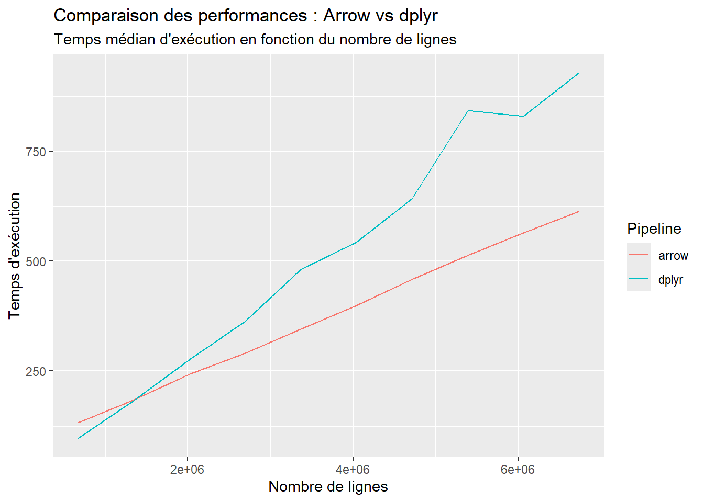

a <- 1L:10L
b <- a
b[1L] <- 3L
a [1] 1 2 3 4 5 6 7 8 9 10b [1] 3 2 3 4 5 6 7 8 9 10Tant R que Arrow héritent d’un paradigme fonctionnel et vectoriel ; leurs vecteurs sont des objets immutables. C’est une force, car c’est paradigme proche du langage mathématique. Cela engendre cependant de nombreuses nécessités de copies profondes.
Contrairement à beaucoup de langages de programmation (langages objet et langages impératifs), R utilise très peu de références.
a <- 1L:10L
b <- a
b[1L] <- 3L
a [1] 1 2 3 4 5 6 7 8 9 10b [1] 3 2 3 4 5 6 7 8 9 10Dans beaucoup de langages de programmation, a et b référeraient au même objet et seraient tous deux modifiés. R n’est pas coutumier de ces références. Les objets R ne sont pas modifiables. Ils sont dit immutables.
a <- 1:10
tracemem(a)[1] "<00000215C87A4DE0>"a[1L] <- 3Ltracemem[0x00000215c87a4de0 -> 0x00000215c87dd278]: eval eval withVisible withCallingHandlers eval eval with_handlers doWithOneRestart withOneRestart withRestartList doWithOneRestart withOneRestart withRestartList withRestarts <Anonymous> evaluate in_dir in_input_dir eng_r block_exec call_block process_group withCallingHandlers <Anonymous> process_file <Anonymous> <Anonymous> execute .main untracemem(a)La fonction tracemem() permet de tracer quand un objet a été copié. Le choix d’immutabilité a une grande pertinence en terme de langage, mais une des conséquences est la présence de nombreuses copies dans R. Lorsque l’on affecte une seule valeur d’un vecteur dans R, en réalité, tout le vecteur est copié, pour éviter tout effet de bord.
La présence de copies est un facteur majeur de consommation de ressources, tant du point de vue de la mémoire utilisée que du temps de calcul.
Si du point de vue de l’utilisateur, R fait une copie à chaque affectation, en réalité il n’est pas si stupide que cela non plus. R utilise une stratégie d’optimisation dite copy-on-write qui est également la stratégie utilisée par les fork() sous Linux et Unix.
a <- 1:10
tracemem(a)[1] "<00000215C9217D58>"b <- a
b[1L] <- 3Ltracemem[0x00000215c9217d58 -> 0x00000215c9244cd8]: eval eval withVisible withCallingHandlers eval eval with_handlers doWithOneRestart withOneRestart withRestartList doWithOneRestart withOneRestart withRestartList withRestarts <Anonymous> evaluate in_dir in_input_dir eng_r block_exec call_block process_group withCallingHandlers <Anonymous> process_file <Anonymous> <Anonymous> execute .main untracemem(a)Dans l’exemple ci-dessus :
b <- a il y a une copie logique entre b et a, avec un séparation logique de mémoire.Cela permet de s’épargner une part des copies inutiles.
library(dplyr)
Attachement du package : 'dplyr'Les objets suivants sont masqués depuis 'package:stats':
filter, lagLes objets suivants sont masqués depuis 'package:base':
intersect, setdiff, setequal, uniontbl <-
starwars %>%
select(name, height, mass, homeworld)
tbl %>%
filter(! is.na(mass) & ! is.na(height)) %>%
mutate(bmi = mass / (height/100)^2) %>%
group_by(homeworld) %>%
summarise(
count = n(),
avg_height = mean(height),
avg_mass = mean(mass),
avg_bmi = mean(bmi)
) %>%
arrange(desc(avg_bmi))# A tibble: 40 x 5
homeworld count avg_height avg_mass avg_bmi
<chr> <int> <dbl> <dbl> <dbl>
1 Nal Hutta 1 175 1358 443.
2 Vulpter 1 94 45 50.9
3 Kalee 1 216 159 34.1
4 Bestine IV 1 180 110 34.0
5 <NA> 3 153 82 32.6
6 Malastare 1 112 40 31.9
7 Trandosha 1 190 113 31.3
8 Tatooine 8 169 85.4 29.3
9 Sullust 1 160 68 26.6
10 Dathomir 1 175 80 26.1
# i 30 more rowsLorsque l’on effectue une pipeline de ce type en dplyr, chaque appel séquentiel de fonction reposera sur vecteurs immutables, ce qui engendrera un nombre important de copies et d’allocations.
library(lobstr)
Attachement du package : 'lobstr'L'objet suivant est masqué depuis 'package:dplyr':
srcetape_1 <- tbl
etape_2 <- etape_1 %>% filter(! is.na(mass) & ! is.na(height))
etape_3 <- etape_2 %>% mutate(bmi = mass / (height/100)^2)
etape_4 <- etape_3 %>% group_by(homeworld)
etape_5 <- etape_4 %>% summarise(count = n(), avg_height = mean(height), avg_mass = mean(mass), avg_bmi = mean(bmi))
etape_6 <- etape_5 %>% arrange(desc(avg_bmi))
ref(etape_1)o [1:0x215c7dbf468] <tibble[,4]>
+-name = [2:0x215c31947d0] <chr>
+-height = [3:0x215c5e75db0] <int>
+-mass = [4:0x215c3192d60] <dbl>
\-homeworld = [5:0x215c3193340] <chr> ref(etape_2)o [1:0x215c9e0d968] <tibble[,4]>
+-name = [2:0x215c610aff0] <chr>
+-height = [3:0x215c9ab08f0] <int>
+-mass = [4:0x215c9ec6950] <dbl>
\-homeworld = [5:0x215c9ec8630] <chr> ref(etape_3)o [1:0x215c9e15018] <tibble[,5]>
+-name = [2:0x215c610aff0] <chr>
+-height = [3:0x215c9ab08f0] <int>
+-mass = [4:0x215c9ec6950] <dbl>
+-homeworld = [5:0x215c9ec8630] <chr>
\-bmi = [6:0x215c9ec8000] <dbl> ref(etape_4)o [1:0x215c9e18a88] <gropd_df[,5]>
+-name = [2:0x215c610aff0] <chr>
+-height = [3:0x215c9ab08f0] <int>
+-mass = [4:0x215c9ec6950] <dbl>
+-homeworld = [5:0x215c9ec8630] <chr>
\-bmi = [6:0x215c9ec8000] <dbl> ref(etape_5)o [1:0x215c9e1c8e8] <tibble[,5]>
+-homeworld = [2:0x215c9880320] <chr>
+-count = [3:0x215c9aa2110] <int>
+-avg_height = [4:0x215c9883aa0] <dbl>
+-avg_mass = [5:0x215c9f305a0] <dbl>
\-avg_bmi = [6:0x215c9f30ba0] <dbl> ref(etape_6)o [1:0x215c6ad8d48] <tibble[,5]>
+-homeworld = [2:0x215c9f30a20] <chr>
+-count = [3:0x215c9aa5210] <int>
+-avg_height = [4:0x215c9f30ea0] <dbl>
+-avg_mass = [5:0x215c9f2fe20] <dbl>
\-avg_bmi = [6:0x215c9f31020] <dbl> On peut ainsi observer :
filter() requiert la création de nouveaux vecteurs.mutate(bmi = ...), cela rajoute simplement une colonne.group_by() n’est qu’un ajout de metadata.summarise().arrange() demande une copie.Arrow fonctionne… Egalement selon un paradigme fonctionnel et vectoriel.
library(arrow)
Attachement du package : 'arrow'L'objet suivant est masqué depuis 'package:utils':
timestampa <- arrow_array(1L:10L)
b <- a
b[1L] <- Scalar$create(3L)Error in b[1L] <- Scalar$create(3L): objet de type 'environment' non indiçableLes objets de R sont déjà immutables. Arrow va plus loin que cela en n’exposant aucune méthode de set. On ne peut pas remplacer une valeur unique discrètement sélectionnée dans un vecteur arrow. En réalité, c’est déjà un peu le cas dans R puisque sour R b[1L] <- 3L alloue en fait un nouveau vecteur. Mais arrow ne donne pas l’illusion de l’existence d’un set. b[1L] <- Scalar$create(3L) renvoie une erreur.
Les fonctions s’appliquant sur des arrow array sont les compute fonctions.
ar <- arrow_array(c(1.2, 5.3, 10.1))
ar_1 <- call_function("sum", ar)
ar_2 <- call_function("add", ar, Scalar$create(2))
ar$pointer()<pointer: 0x00000215c9d02640>ar_1$pointer()<pointer: 0x00000215c9d022c0>ar_2$pointer()<pointer: 0x00000215c9d024c0>arArray
<double>
[
1.2,
5.3,
10.1
]ar_1Scalar
16.6ar_2Array
<double>
[
3.2,
7.3,
12.1
]Les arrow function agissent sur les arrays et renvoient de nouveaux arrays. Ces fonctions sont bien prévues pour manipuler des objets immutables. Le paradigme est assez proche de celui de R.
ar_tbl <-
starwars %>%
select(name, height, mass, homeworld) %>%
arrow_table()
ar_tbl %>%
filter(! is.na(mass) & ! is.na(height)) %>%
mutate(bmi = mass / (height/100)^2) %>%
group_by(homeworld) %>%
summarise(
count = n(),
avg_height = mean(height),
avg_mass = mean(mass),
avg_bmi = mean(bmi)
) %>%
arrange(desc(avg_bmi))Table (query)
homeworld: string
count: int64
avg_height: double
avg_mass: double
avg_bmi: double
* Sorted by avg_bmi [desc]
See $.data for the source Arrow objectLorsque l’on effectue des calculs sur une arrow_table (par exemple une table chargée avec read_parquet(as_data_frame = FALSE)), l’on reste à l’état de query tant qu’on n’a pas appélé la fonction collect().
On aurait donc pu écrire à la place (pour illustrer le passage par le format parquet) :
temp_parquet <- tempfile(fileext = ".parquet")
starwars %>%
select(name, height, mass, homeworld) %>%
write_parquet(temp_parquet)
read_parquet(temp_parquet, as_data_frame = FALSE) %>%
filter(! is.na(mass) & ! is.na(height)) %>%
mutate(bmi = mass / (height/100)^2) %>%
group_by(homeworld) %>%
summarise(
count = n(),
avg_height = mean(height),
avg_mass = mean(mass),
avg_bmi = mean(bmi)
) %>%
arrange(desc(avg_bmi))Table (query)
homeworld: string
count: int64
avg_height: double
avg_mass: double
avg_bmi: double
* Sorted by avg_bmi [desc]
See $.data for the source Arrow objectar_tbl %>%
filter(! is.na(mass) & ! is.na(height)) %>%
mutate(bmi = mass / (height/100)^2) %>%
group_by(homeworld) %>%
summarise(
count = n(),
avg_height = mean(height),
avg_mass = mean(mass),
avg_bmi = mean(bmi)
) %>%
arrange(desc(avg_bmi)) %>%
collect()# A tibble: 40 x 5
homeworld count avg_height avg_mass avg_bmi
<chr> <int> <dbl> <dbl> <dbl>
1 Nal Hutta 1 175 1358 443.
2 Vulpter 1 94 45 50.9
3 Kalee 1 216 159 34.1
4 Bestine IV 1 180 110 34.0
5 <NA> 3 153 82 32.6
6 Malastare 1 112 40 31.9
7 Trandosha 1 190 113 31.3
8 Tatooine 8 169 85.4 29.3
9 Sullust 1 160 68 26.6
10 Dathomir 1 175 80 26.1
# i 30 more rowsOn note que le collect() permet bien d’obtenir dans R, sous forme de tibble, les données souhaitées. Regardons maintenant le contenu de la query.
ar_tbl %>%
filter(! is.na(mass) & ! is.na(height)) %>%
mutate(bmi = mass / (height/100)^2) %>%
group_by(homeworld) %>%
summarise(
count = n(),
avg_height = mean(height),
avg_mass = mean(mass),
avg_bmi = mean(bmi)
) %>%
arrange(desc(avg_bmi)) %>%
show_query()ExecPlan with 6 nodes:
5:SinkNode{}
4:OrderByNode{ordering=[FieldRef.Name(avg_bmi) DESC] nulls last}
3:GroupByNode{keys=["homeworld"], aggregates=[
hash_count_all(*),
hash_mean(avg_height, {skip_nulls=false, min_count=0}),
hash_mean(avg_mass, {skip_nulls=false, min_count=0}),
hash_mean(avg_bmi, {skip_nulls=false, min_count=0}),
]}
2:ProjectNode{projection=["avg_height": height, "avg_mass": mass, "avg_bmi": divide(cast(mass, {to_type=double, allow_int_overflow=false, allow_time_truncate=false, allow_time_overflow=false, allow_decimal_truncate=false, allow_float_truncate=false, allow_invalid_utf8=false}), cast(power_checked(divide(cast(height, {to_type=double, allow_int_overflow=false, allow_time_truncate=false, allow_time_overflow=false, allow_decimal_truncate=false, allow_float_truncate=false, allow_invalid_utf8=false}), cast(100, {to_type=double, allow_int_overflow=false, allow_time_truncate=false, allow_time_overflow=false, allow_decimal_truncate=false, allow_float_truncate=false, allow_invalid_utf8=false})), 2), {to_type=double, allow_int_overflow=false, allow_time_truncate=false, allow_time_overflow=false, allow_decimal_truncate=false, allow_float_truncate=false, allow_invalid_utf8=false})), homeworld]}
1:FilterNode{filter=(invert(is_null(mass, {nan_is_null=true})) and invert(is_null(height, {nan_is_null=true})))}
0:TableSourceNode{}La requête consiste en un ExecPlan formé de plusieurs Nodes qui constituent ses opérations élémentaires. Les plans et leurs exécution dépendent du moteur Apache Acero. On voit également que les GroupByNode et ProjectNode appelent des compute_functions.
En réalité, comme on peut le voir dans son code source, c’est aussi le cas du FilterNode qui appelle la compute function filter(). L’essentiel du travail de l’évaluation des requêtes, c’est d’appeler les compute functions appropriées.
library(arrow)
library(bench)
set.seed(1L)
n <- 1e7
v <- runif(n, min = 0, max = 100)
v2 <- runif(n, min = 0, max = 100)
v_flt <- v > 50
ar <- arrow_array(v)
ar2 <- arrow_array(v2)
ar_flt <- arrow_array(v_flt)bench_r <-
bench::mark(
sum = sum(v),
mean = mean(v),
sqrt = sqrt(v),
filter = v[v_flt],
add = v + v2,
mul = v * v2,
div = v / v2,
iterations = 100L,
check = FALSE,
memory = FALSE,
filter_gc = FALSE,
time_unit = "ms"
) %>%
select(expression, median) %>%
rename(r = median) %>%
mutate(expression = as.character(expression))set_cpu_count(1L)
bench_arrow_single <-
bench::mark(
sum = call_function("sum", ar),
mean = call_function("mean", ar),
sqrt = call_function("sqrt", ar),
filter = call_function("filter", ar, ar_flt),
add = call_function("add_checked", ar, ar2),
mul = call_function("multiply_checked", ar, ar2),
div = call_function("divide_checked", ar, ar2),
iterations = 100L,
check = FALSE,
memory = FALSE,
filter_gc = FALSE,
time_unit = "ms"
) %>%
select(expression, median) %>%
rename(arrow_single = median) %>%
mutate(expression = as.character(expression))nombre_coeurs_disponibles <- parallel::detectCores()
set_cpu_count(nombre_coeurs_disponibles)
bench_arrow_multi <-
bench::mark(
sum = call_function("sum", ar),
mean = call_function("mean", ar),
sqrt = call_function("sqrt", ar),
filter = call_function("filter", ar, ar_flt),
add = call_function("add_checked", ar, ar2),
mul = call_function("multiply_checked", ar, ar2),
div = call_function("divide_checked", ar, ar2),
iterations = 100L,
check = FALSE,
memory = FALSE,
filter_gc = FALSE,
time_unit = "ms"
) %>%
select(expression, median) %>%
rename(arrow_multi = median) %>%
mutate(expression = as.character(expression))bench_r %>%
left_join(bench_arrow_single, by = "expression") %>%
left_join(bench_arrow_multi, by = "expression")# A tibble: 7 x 4
expression r arrow_single arrow_multi
<chr> <dbl> <dbl> <dbl>
1 sum 13.9 13.8 14.0
2 mean 29.1 13.8 14.0
3 sqrt 91.6 61.1 42.7
4 filter 98.4 54.1 53.7
5 add 53.4 51.7 47.0
6 mul 52.3 54.3 51.0
7 div 51.0 59.2 56.5Les temps de calcul sont également du même ordre de grandeur y compris lorsque l’on donne accès à 16 coeurs à Arrow.
library(dplyr)
library(arrow)
library(bench)
library(nycflights13)
bench_nrow <-
bench::press(
rep_tbl = seq(2L,21L, 2L), {
flights_tbl <- bind_rows(replicate(rep_tbl, flights, simplify = FALSE)) %>%
select(year, month, day, carrier, origin, dest, dep_delay, arr_delay, air_time, distance)
ar_flights <- flights_tbl %>% arrow_table()
arrow_pipeline <- function() {
ar_flights %>%
filter(!is.na(dep_delay) & !is.na(arr_delay) & !is.na(distance)) %>%
mutate(speed = distance / (air_time / 60)) %>% # vitesse moyenne en miles/heure
group_by(origin, dest) %>%
summarise(
count = n(),
avg_dep_delay = mean(dep_delay),
avg_arr_delay = mean(arr_delay),
avg_speed = mean(speed),
.groups = "drop_last"
) %>%
arrange(desc(avg_speed)) %>%
collect()
}
dplyr_pipeline <- function() {
flights_tbl %>%
filter(!is.na(dep_delay) & !is.na(arr_delay) & !is.na(distance)) %>%
mutate(speed = distance / (air_time / 60)) %>%
group_by(origin, dest) %>%
summarise(
count = n(),
avg_dep_delay = mean(dep_delay),
avg_arr_delay = mean(arr_delay),
avg_speed = mean(speed),
.groups = "drop_last"
) %>%
arrange(desc(avg_speed))
}
bench::mark(
arrow = arrow_pipeline(),
dplyr = dplyr_pipeline(),
iterations = 20L,
check = FALSE,
memory = FALSE,
filter_gc = FALSE,
time_unit = "ms"
)
}
) %>%
mutate(n_rows = nrow(flights) * rep_tbl, expression = as.character(expression)) %>%
select(expression, n_rows, median) %>%
rename(time = median)Running with:
rep_tbl 1 2 2 4 3 6 4 8 5 10 6 12 7 14 8 16 9 1810 20library(dplyr)
library(ggplot2)
library(tidyr)
ggplot(bench_nrow, aes(x = n_rows, y = time, color = expression)) +
geom_line() +
scale_x_continuous() +
labs(
title = "Comparaison des performances : Arrow vs dplyr",
subtitle = "Temps médian d'exécution en fonction du nombre de lignes",
x = "Nombre de lignes",
y = "Temps d'exécution",
color = "Pipeline"
)
Sur de petites données tabulaires… dplyr est plus rapide ! Mais lorsque l’on s’approche de l’ordre de grandeur de 10 millions d’observations, arrow devient plus intéressant.
Arrow et R se ressemblent également dans le domaine du paradigme de calcul : ils se basent tous les deux sur l’axiome d’immutabilité des vecteurs, hérité d’une programmation fonctionnelle vectorielle. Ce n’est pas sur cet axe non plus qu’ils diffèrent. Sur des tables de données de taille faible, arrow n’est pas forcément plus intéressant que dplyr. Mais Arrow passe mieux à l’échelle, même sans utiliser les datasets que l’on verra dans la prochaine partie.